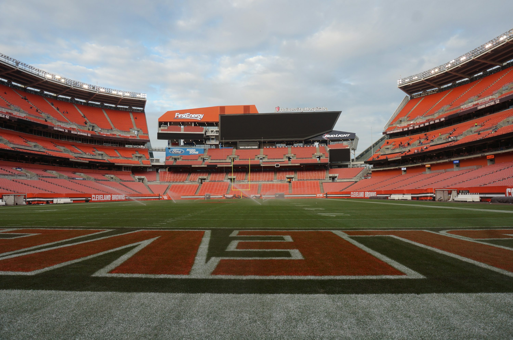

.webp)
National football
author :PETE ROZELLE
PUBLISH DATE "1970"
STRUCTURE
Content of the NFL The National Football League (NFL) is the highest professional level of American football in the world, composed of 32 teams split equally between the American Football Conference (AFC) and the National Football Conference (NFC) . It is headquartered in New York City and is one of the most popular and profitable sports leagues globally.
SEASONS
The National Football Conference (NFC) is a conference of the National Football League (NFL), the highest level of professional American football in the United States. The NFC and its counterpart, the American Football Conference (AFC), each have 16 teams organized into four divisions. Both conferences were created as part of the 1970 NFL merger with the rival American Football League (AFL). All ten of the former AFL teams and three NFL teams formed the AFC while the remaining thirteen NFL clubs formed the NFC. A series of league expansions and division realignments have occurred since the merger, thus making a total of 16 clubs in each conference.
.webp)